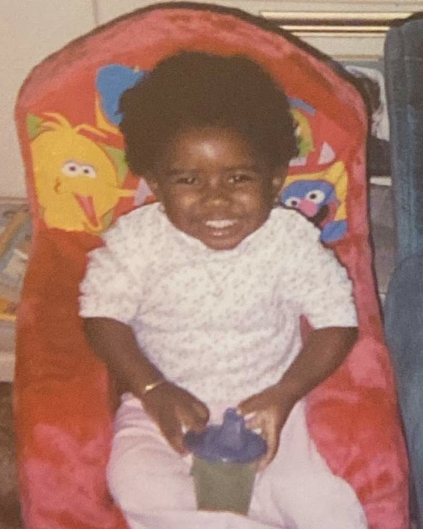

My name is Demille Taylor, welcome to my portfolio!
I’m a junior at San Francisco State University, majoring in Visual Communication Design. I really love art, fashion, and design (particularly creative direction and design related to music) my favorite painters & designers are Faith Ringgold, Ernie Barnes, and Shusei Nagaoka. Guo Pei is my all-time favorite fashion designer and couturier, because of her masterful use of textiles and embroidery. I’m also a fan of the following fashion houses, Versace, Schiaperelli, and Mugler.
I have a deep passion for music, particularly Black music history. I love discoverings samples, collecting vinyls, Afrofuturism, and finding Africanisms in old and modern forms of Black American music. My favorite artists include, Beyoncé, Mariah Carey, Stevie Wonder, Luther Vandross, Bootsy Collins, Teena Marie, Earth, Wind & Fire, and Michael Jackson. One of my favorite things to do is curate playlists based on moods, musical keys, certain seasons, climate, or colors. For me, certain keys represent colors, others exude warmth, or sound like how a misty breeze would feel. Beside being an avid music listener, I’ve played piano, violin, and cello at different points. Now I’m currently teaching myself how to play the bass guitar. I’m really big on collecting vinyl records. I started my collection when my grandparents gave me a record player and Hotter Than July by Stevie Wonder. Since then I’ve added about 45 additional records, which consist of a mix of singles and LPs. Some of the titles I own are Renaissance by Beyoncé, In Square Circle by Stevie Wonder, All N All by Earth, Wind, & Fire, Hollywood Squares by Bootsy Collins, Sukiyaki by Taste of Honey, Love Takes Time by Mariah Carey, and Alex Haley’s autobiographical narrative Tells the Story of His Search for Roots.